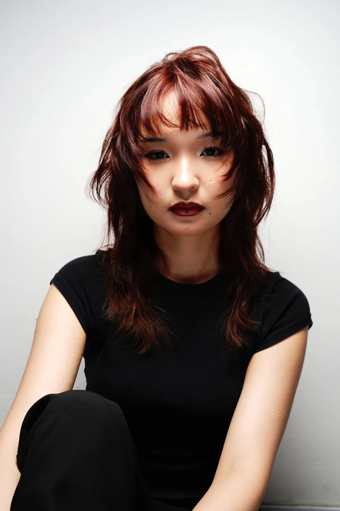

Yenlik Abdissattar, designer working across editorial, interface, motion and AI. Looking for internships and junior roles in Seoul, remote and freelance.
Under three minutes blind contours
Index
10 projects



AboutI study Information & Interaction Design at Yonsei University and spent an exchange semester at NTU's School of Art, Design and Media in Singapore. I work across editorial, interface, motion and AI, and before design I managed large events, including the World Schools Chess Teams Championship in Aktau.
Read the CVDownload the CV as PDFLinkedIn ↗
Contact
Open to internships and full-time roles in Seoul, remote work and freelance projects.